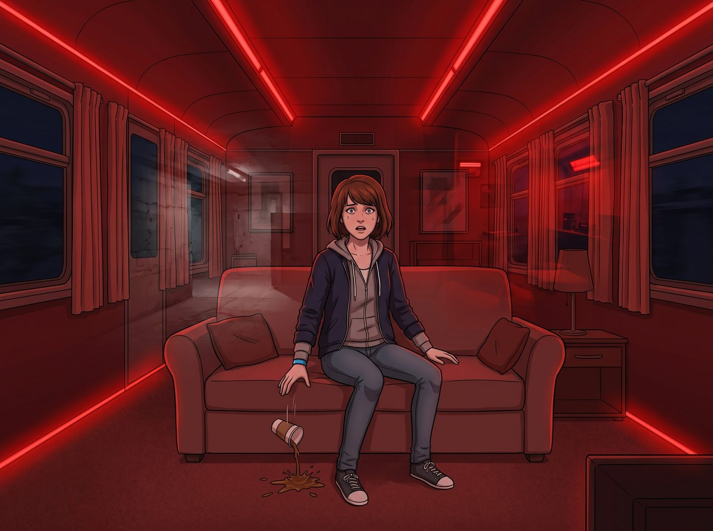

紅光暗房

入夜後，下了一整天的雨終於停了半個小時。
Victoria 抱怨車廂裡有發霉的味道，非要拉著 Kate 去外面呼吸沒有防腐劑的空氣；而 Lily 則抱著平板電腦，跟著出去檢查外圍太陽能板的發電數據。車廂裡只剩下 Max 和 Chloe，正享受著難得的清靜。
一、斷電的瞬間
突然，一聲沉悶的金屬斷路聲喀噠響起。
主發電機的嗡鳴聲戛然而止，整個二號車廂瞬間陷入了死一般的漆黑。
幾秒鐘後，Lily 設定的一級物理斷電應急協議自動啟動。安裝在天花板邊緣和地板接縫處的低壓LED燈條亮了起來。但為了節省備用電源重啟前的電量，這些應急燈是深紅色的。
幽暗、封閉的金屬空間，瞬間被濃烈的、令人窒息的紅光填滿。通風系統停擺，車廂裡陷入了絕對的死寂。
Max 坐在沙發上，手裡的咖啡杯砰地一聲掉在地毯上，褐色的液體在地毯上蔓延。
她不是沒見過紅光。她自己的暗房裡就掛著一盞安全燈，每次沖洗底片，她都會在那片暗紅裡待上好幾個小時。但那是她親手關上門、親手按下開關、知道自己隨時可以推門出去的紅光。
而現在，是毫無預警的一聲斷響、一片漆黑，然後這片紅光自己亮起來，把她困在裡面。她沒有選擇，也不知道它什麼時候會結束。
就像那個地下室。
幻覺，像海嘯一樣襲來。
二、暗房的幻覺
那是小鎮最深處的噩夢。
Max 感覺自己的雙手彷彿被無形的束線帶死死勒住，鼻腔裡甚至聞到了顯影藥水和化學試劑的刺鼻氣味。她的呼吸開始急促，瞳孔因為極度的恐懼而劇烈收縮。黑暗中，彷彿隨時會亮起一道刺眼的相機閃光燈。
「不……不要……」Max 語無倫次地呢喃，雙手死死抱住頭，身體不受控制地發抖。
Chloe 的情況也沒有好到哪裡去。紅光亮起的那一刻，她下意識地摸向了自己的額頭——在另一個時間線裡，那裡曾被一顆子彈無情地貫穿。她想起了在垃圾場裡的絕望，想起了醒來後身處黑暗中的恐懼。冷汗瞬間浸透了她的黑色背心，她的呼吸停滯了兩秒。
但當她聽到 Max 喉嚨裡發出那種幾乎要窒息的喘息聲時，街頭龐克骨子裡的那股瘋狂的保護慾，瞬間戰勝了她自己的創傷。
三、帶傷的守護
「Max！」Chloe 猛地撲過去，一把將已經蜷縮在沙發角落的 Max 死死摟進懷裡。
「Max！看著我！看著老娘！」Chloe 的聲音雖然在發抖，但雙臂的力氣極大。她用力握住 Max 冰冷的手腕，強迫她感受自己的體溫，「妳沒有被綁住！沒有束線帶！感覺到了嗎？！」
「紅光……快門聲……他……他在這裡……」Max 閉著眼睛，眼淚奪眶而出。
「他不在這兒！」Chloe 咬著牙，一把抓起桌上那台改裝了金屬戰術裝甲的相機，像握著一把鐵錘一樣死死攥在手裡。她像一頭護崽的母狼，擋在 Max 身前，目光兇狠地盯著被紅光籠罩的車廂門。
「那個變態已經死了，或者在監獄裡爛透了！我們在華盛頓州的森林裡！這裡沒有地下室，只有我們！」Chloe 跪在地毯上，將 Max 的頭按在自己的胸口，讓她聽自己劇烈卻真實的心跳聲。
「深呼吸，Max。跟著我。吸氣……呼氣……」Chloe 不斷地親吻著 Max 的頭髮，用最粗俗卻最有效的語言驅趕著恐懼，「老娘現在穿著十四孔的鋼頭馬丁靴，手裡拿著能砸碎防彈玻璃的鐵疙瘩。就算那個人渣真的從地獄裡爬出來，我也會把這台相機直接塞進他的喉嚨裡！」
Max 緊緊抓著 Chloe 的衣角，指關節泛白。在 Chloe 狂野而堅定的心跳聲中，鼻腔裡那股虛幻的顯影藥水味，漸漸被 Chloe 身上熟悉的機油味和淡淡的菸草味所取代。
時間在紅光中被無限拉長。每一秒都像是在泥沼中跋涉。
四、重新亮起的暖光
三分鐘後。伴隨著一陣低沉的電流嗡鳴聲，Lily 的自動化腳本終於完成了太陽能逆變器的重啟。
「滴——」深紅色的應急燈瞬間熄滅。溫暖、明亮的暖白色頂燈重新照亮了二號車廂。咖啡機發出了一聲輕快的開機音樂，通風管道裡再次吹出了帶有松香的暖風。
噩夢如潮水般退去。
Max 虛脫地靠在 Chloe 懷裡，大口大口地呼吸著新鮮空氣。Chloe 也長長地舒了一口氣，這才發現自己握著相機的手已經僵硬到抽筋了。
砰！車廂的門被推開，伴隨著一陣冷風，另外三個傢伙走了進來。
「外面的泥巴簡直是災難！我剛才差點滑倒！」Victoria 抱怨著拍打著外套。
「剛才營地的微型電網出現了短暫的波峰異常，導致主斷路器跳閘。」Lily 推了推眼鏡，平靜地匯報著剛才的物理現象，「備用太陽能矩陣已經接管了，但切換不是瞬間完成的。逆變器重啟前必須先自檢，確認電壓、頻率和相位都穩定，才能重新併網供電，否則可能燒掉整排設備。這套流程跑完，大約需要三分鐘。」
她頓了頓：「設備越精密，保護機制就越多，恢復反而越慢。在那之前，只能先靠應急燈撐著。各位沒有受到驚嚇吧？」
Kate 注意到了地上打翻的咖啡杯，以及緊緊抱在一起、臉色蒼白的兩個人。「Max？Chloe？妳們怎麼了？臉色這麼難看？」Kate 擔憂地走過來。
五、不說破的默契
Max 和 Chloe 對視了一眼。
只有她們兩個人知道，在剛才那短短的三分鐘裡，她們重新經歷了一次怎樣的地獄。但她們也同時看到了彼此眼中的力量——她們不再是當年那個無助的女孩和待宰的羔羊了。
「沒事。」Chloe 鬆開 Max，掩飾性地揉了揉鼻子，換上了那副招牌的囂張笑容，「剛才停電太黑了，Max 以為有熊闖進來了，嚇得把咖啡都扔了。我正在給她傳授如何用金屬相機單殺灰熊的戰術指導。」
「我哪有！」Max 配合地瞪了 Chloe 一眼，聲音雖然還有些沙啞，但已經恢復了平靜，「我只是……覺得妳這個相機鐵殼子太重了，拿不動。」
Lily 看了看地上的咖啡漬，又看了看兩人的微表情，並沒有拆穿。她只是走到終端前，輕敲了幾下鍵盤：「既然如此，我會將應急燈的顏色代碼從警示紅修改為護眼暖黃。畢竟，紅色光譜在心理學上容易引發不必要的焦慮，這不利於營地核心資產的情緒穩定。」
Max 看著 Lily，知道這個腹黑的實習生或許又憑藉著她可怕的觀察力猜到了什麼，並用她獨特的、冷冰冰的行政指令，給予了最溫柔的修正。
「謝謝妳，Lily。」Max 輕聲說。
六、持續的扶持
Chloe 重新坐回沙發上，將手臂搭在 Max 的肩膀上，用力地摟了一下。在明亮的暖白色燈光下，她們沒有再提那個紅色的噩夢。
因為她們知道，那些創傷或許永遠不會徹底消失，下一次觸發依然會措手不及地襲來。但只要身邊還有這群傢伙、還有彼此的心跳聲可以依靠，她們就有辦法一次又一次地，把彼此從那片黑暗裡拉回來。